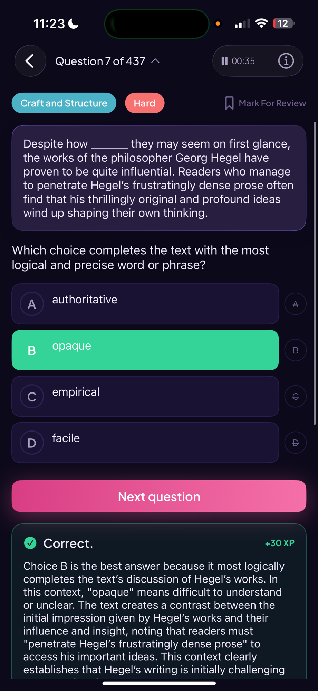

Korah drives the graph while it explains, so you learn the calculator tricks that turn a three-minute problem into a twenty-second one. 3,500 questions, essay feedback and one-on-one tutoring come with it.
Be first in line when Korah launches this August.
We'll email you when we release early August.

Where Korah students are headed
Hand Korah your last score report, get a plan built around the skills costing you the most points, then work it with a tutor.
Screenshot your official SAT or PSAT report and drop it in. Korah reads your domain scores straight off it.
Those scores get ranked into a plan, weakest skills first, and it rebuilds itself as your accuracy changes.
Work the plan with the Korah tutor any hour, or take a standing one-on-one slot with a 1500+ scorer on our team.
Ask a question and Korah builds the graph as it answers: tables, sliders and regressions appear in Desmos while the reasoning shows up in plain English beside them.
Open Desmos chatYou ask in the chat and the calculator updates beside it. Nothing to set up, nothing to copy across.
Every fit comes with its coefficients and residual, so you know the answer is the right one.
The calculator methods that shortcut whole question types, not just the algebra you already know.
College Board-sourced Math and Reading & Writing, filterable by domain, skill and difficulty. Every answer you give feeds the accuracy numbers on your home page.
Open the question bankSame layout, same tools and the same clock you get on test day, with the explanation waiting behind every answer.
Accuracy, attempts and score journey update the moment you finish a question.
Same questions, different pace. Pick whichever one suits the time you have.
Draft in the editor and get feedback pinned to the exact passage it is about, plus scores for voice, reflection and detail you can watch move as you revise.
Open the essay editorThe first time I rebuilt the carburetor I did it wrong, and the second time too. I learned a lot about persistence that summer. By the fourth attempt, my hands knew the order of the parts before my head did.
Passages get highlighted in the draft and the note sits beside them, so you are never guessing which line a comment is about.
Each one comes with a note on what moved it, not just a number.
Your Common App essay and every school supplement live in one place, so you can reuse what already works.
We opened free online tutoring for students with demonstrated interest and need. Weekly sessions, a plan built around your weak spots, and no payment at any point.
Book a sessionStudent tutors who sat the same test recently and know which shortcuts actually survive the clock.
A standing one-on-one slot, with a study plan that rebuilds itself as your accuracy changes between sessions.
Nothing to pay and nothing to cancel. We ask for demonstrated interest and need, not a payment method.
Everything below is in the app already, and all of it is free.
Make an account and your first question is one tap away. No card, no trial, no upsell.